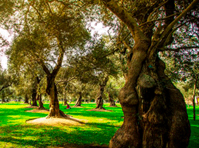
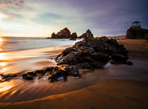
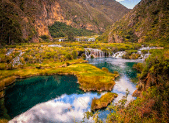
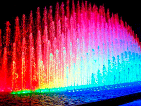
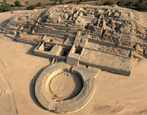
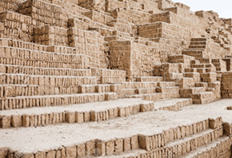
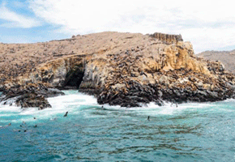

Turismo en Lima
Inicio
Historia
Top 7 destinos turísticos
7 platos típicos de lima
Asegura tu viaje
Los 7 destinos turísticos más destacados en lima:

Parque El Olivar

Punta Negra

Nor Yauyos-Cochas

Circuito Mágico del Agua

Caral

Huaca Pucllana

Islas Palomino